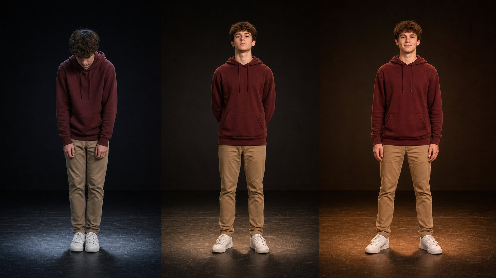
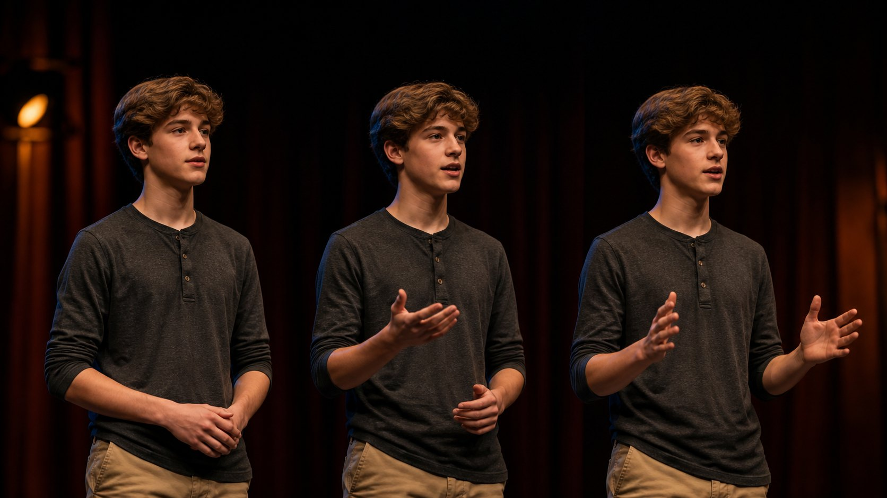
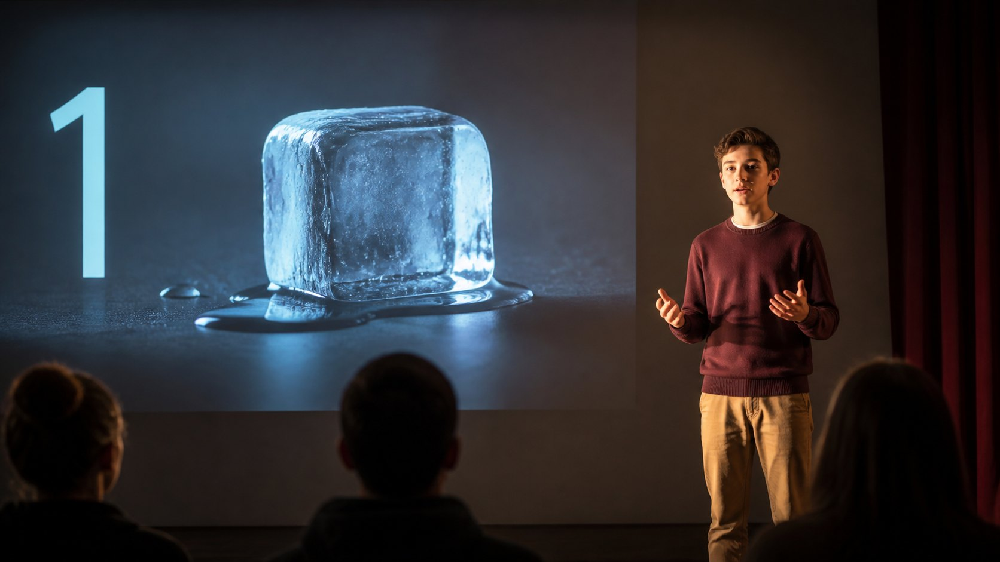
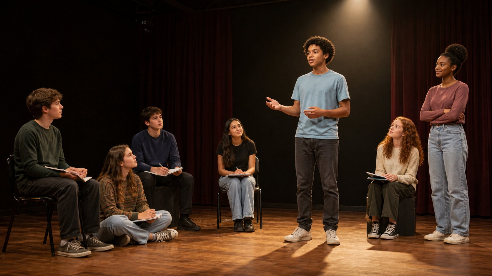

Lesson 27 · Presentation skills
PRESENCE
From backstage
to spotlight.
Confidence is not a personality. It is a sequence you can rehearse.
01 · CHECK-IN
WHAT DO YOU
ALREADY BRING?
iChoose one real strength. Complete: “This helps an audience because…”
Seven speakers can begin with seven different strengths.
Choose one feature. Say exactly what changed.
02 · FOUR ACTS
By the end, you will deliver a clear 60-second talk and explain which rehearsal choices improved it.
03 · THE CONFIDENCE LOOP
DO NOT WAIT
TO FEEL READY.
Open the five actions in order.
iConfidence grows when the next attempt has one specific improvement.

Which posture supports a calm voice? Choose and explain.
05 · BEFORE YOU SPEAK
A SHORT RESET.
- Place both feet.
- Release your shoulders.
- Breathe out slowly.
- Look at the camera and say your first line.
06 · BREATH + FIRST LINE
THE EXHALE
CREATES SPACE.
Um… so… today I want to…
Pause. “Think about your first day at a new school.”
iDo one comfortable cycle: inhale 4 · pause 2 · exhale 6. Then say only the first sentence.
07 · PACE
SLOW THE IDEA,
NOT EVERY WORD.
RUSHEDOur club meets every Friday and students learn new skills make friends and plan events together.
SHAPEDOur club meets every Friday. / Students learn new skills, make friends, and plan events together. / The most important result is confidence.
08 · EMPHASIS
ONE KEY WORD
CARRIES THE LINE.
Choose the word that should carry your meaning.
iVolume helps people hear. Emphasis helps people understand.
09 · ONLINE EYE CONTACT
LOOK THROUGH
THE CAMERA.
Look at faces while listening. Look near the camera for key sentences.
iPut one small removable dot beside the camera. Deliver your first and final lines to that point.

RESTwhen the audience needs to listen
SHOWone idea or direction
COMPAREtwo choices or results
Gesture → finish the idea → return to neutral.
11 · PURPOSEFUL PAUSE
SILENCE SOUNDS
MORE CONFIDENT.
iClick your line. The slash marks a short silent pause, not a breathless stop.
12 · MESSAGE SHAPE
ONE MINUTE.
ONE MESSAGE.
“Think about…” → “First… For example… Second…” → “My main message is…”
13 · OPENINGS
DO NOT BEGIN
WITH AN APOLOGY.
Choose A or B and give two reasons.
14 · HOOK REHEARSAL
START WITH
A DOORWAY.
Choose a doorway to reveal a complete example.
15 · SIGNPOSTS
SHOW LISTENERS
WHERE THEY ARE.
Click a function to reveal the exact phrase.
16 · SUPPORT
A POINT NEEDS
AN EXAMPLE.
Open the three layers in order: claim → concrete example → why it matters.
17 · CLOSINGS
STOP ADDING.
START LANDING.
Choose the ending listeners can remember.
SIGNAL → SUMMARY → FINAL MESSAGE

18 · VISUAL DESIGN
ONE VISUAL.
ONE JOB.
iDo not read the screen. Face the audience, explain the image, then move on.
19 · ONLINE SETUP
REMOVE SMALL
DISTRACTIONS.
0 / 6 checks complete.
20 · AUDIENCE QUESTIONS
YOU MAY TAKE
TIME TO THINK.
iClick your situation. Read the response, then say it without sounding apologetic.
21 · MODEL TALK
LISTEN FOR
THE SHAPE.
Think about your first week in a new school. Who helped you feel welcome? Today, I want to show why school clubs matter. First, clubs help students meet people with the same interests. For example, a new student can join the photography club and immediately have something to discuss. Second, clubs give us a safe place to practise real skills, such as planning, teamwork, and speaking. My main message is simple. A school club is not only an activity. It can be the first place where a student feels that they belong.
22 · LISTEN FOR EVIDENCE
SEVEN LISTENERS.
SEVEN JOBS.
iAnswer your assigned question in a full sentence. Click only after everyone has spoken.
23 · TRANSCRIPT MAP
SEE THE
REHEARSAL MARKS.
Click each line to reveal its job.

24 · SEVEN-PERSON REHEARSAL
ONE SPEAKER.
SIX USEFUL LENSES.
25 · FINAL PRODUCTION
TAKE THE
SPOTLIGHT.
Choose: a useful app · a school improvement · a hobby everyone should try.
0 / 7 strengths observed. Choose one next improvement after the talk.
26 · CURTAIN CALL
WHAT CHANGED
YOUR PRESENCE?
Choose one line and add a concrete example.
HOMEWORK · REHEARSE, RECORD, REVIEW
- Prepare a 60-second talk with three keywords.
- Mark one pause and two emphasized words.
- Record one take.
- Watch without sound: check posture, eye line, and gesture.
- Listen without video: check pace, pauses, and clarity.
- Record a second take with one improvement.
NEXT · LINKING WORDS FOR GIVING OPINIONS